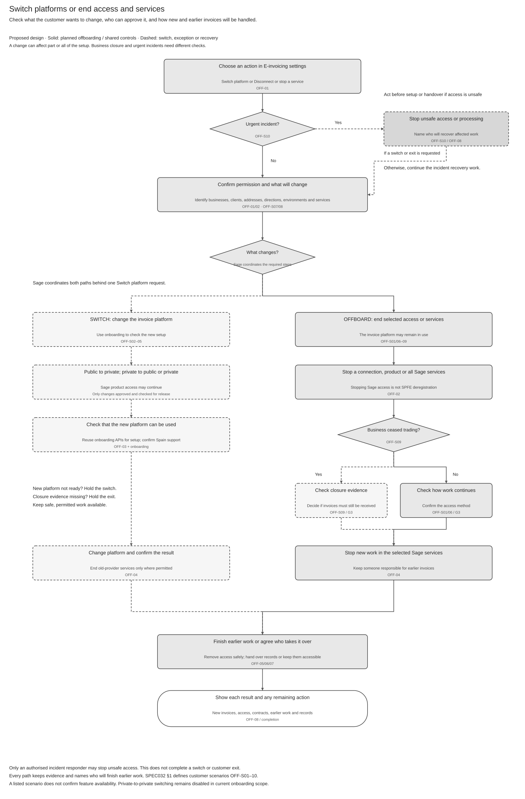

Unpublished draft. Proposed periods need approval. SPEC-SEI-003 is retained in the archive and remains the selected Confluence source.
Customer Offboarding Solution Summary
Logical Feature Specification · Sequence and Reuse Assessment · Feature folder
Revision overview
This separate draft develops SPEC-SEI-003 into three review views. It adds platform responsibility scenarios, separate support and access periods, explicit cutoff handling and a fuller export assessment. The predecessor remains unchanged and selected for stable Confluence page 923861391.
OFF-01–08, OFF-I01–08, OFF-R01–10 and OFF-A01–11 retain their meanings. Existing detailed interaction and data inventories remain in SPEC-SEI-003. No provider contract, retention schedule, lifecycle status or publication approval changes. Support durations, commercial terms and the practical delivery of invoice-copy rights remain open product and legal decisions.
1 Problem and intended outcomes
A business can leave Sage while earlier invoices still need delivery confirmation, payment reporting or correction. It may also need access to invoice records. Ending all access when the subscription expires can prevent this work. Keeping all services active creates cost and security risks. The customer needs to know what stops, what continues, who is responsible and how records remain available. REF-PRODUCT.
The result must show when new invoice processing changes, who will finish earlier work, how records are handed over or kept accessible, and which access has ended. The logical specification defines the required behaviour. This summary explains the customer outcomes and decisions still needed.
The business administrator or authorised accountant approves what will change. Product and Operations explain the exit terms to the customer. Each platform operator confirms its own actions. Legal/Tax confirms which duties continue. Privacy/Records decides how records are kept, returned or deleted. Security decides when credentials can be removed. These responsibilities do not prescribe separate technical services.
3 End-to-end flow
Customer action: switch or offboard
Customer entry point: use E-invoicing settings to Connect or add a platform, Switch platform, or Disconnect or stop a service. A switch is one customer request. Sage coordinates new setup and any old-service exit behind that request, with progress and next actions shown in settings. SPEC038 owns this intended interaction.
A switch changes the platform used to send or receive new invoices. Offboarding ends selected access or services. A switch can include ending old access or services. The customer starts one switch request, which can affect part or all of their setup. The logical spec's customer-action table, OFF-S01–10, defines the ten scenarios, including urgent incidents and business closure. A listed scenario is not a promise that the feature is available.
The settings overview lives in SPEC037. SPEC038 owns the complete customer switch journey. This offboarding set defines the old-service exit checks within that journey, or a standalone disconnect. Its switch references do not create another customer request. The diagram below expands those checks.

Editable Draw.io · PNG · Customer-action scenarios.
Start by checking for an urgent incident. Stop unsafe access when needed, without waiting for the planned switch or exit checks. Then identify what the customer wants to change. If the business has ceased trading, confirm whether a replacement platform is needed. Every path must leave someone responsible for earlier work and records.
Ending Sage access to SPFE is different from changing where new invoices are received. Neither action proves that the customer has deregistered from SPFE. The exact public-access steps remain open under OFF-Q02/04; see SPEC-SEI-033 §3.3.
Onboarding and offboarding describe the work Sage must coordinate. They do not require separate customer journeys for a switch. SPEC033 keeps API reuse and Spain implementation checks separate from the settings interaction.
Planned exit and recovery

Editable Draw.io · PNG.
The existing diagram shows the normal OFF-01–07 process. G4 confirms when new invoice processing changes. G5 assigns earlier work. G6 checks which access and services can end. G7 confirms records handover and the rules for keeping or deleting data. Export preparation can start before the change; it does not need to wait for access removal. Use OFF-08 when an action partly succeeds or its result is unknown.
4 How long should support continue?
Recommendation for product review: use separate periods with explicit start events. Avoid one account-wide expiry. The following numbers are planning proposals for OFF-Q01; they are neither statutory periods nor existing Sage commitments. Detailed rules and failure handling are authoritative in SPEC-SEI-032, section 4.
Spain's Law 56/2007 Article 2 bis.3 gives recipients four years from invoice issue to request copies without additional cost. This is not four years of full Sage service. The accountable copy provider, applicable commencement rules and post-exit channel need Legal confirmation. REF-COPY; OFF-Q03.
5 Do we need export?
Yes: provide an authorised export and evidence-handover capability. This is already in the draft product baseline, OFR12–13. For each exit, agree whether the customer receives files, an authorised destination receives them, or a verified continuing archive supplies access. Record the result and limitations. A change of provider does not automatically transfer records or transfer responsibility for unfinished actions. REF-PRODUCT.
The export must identify original invoice files, public copies, readable copies such as PDFs, and event/report evidence separately. PDFs alone are not a complete handover of structured invoice records. SPEC-SEI-032, section 5 defines the file list, delivery confirmation, later additions and recovery. Public downloads can supply some records, but do not prove that all originals, private-provider responses or history are available. REF-SPFE.
6 Reuse and Spain boundaries
The reuse assessment records source capability, local changes, owner and evidence gaps. No production exit implementation is established by this review.
7 Decisions needed before a customer commitment
An open decision prevents the affected promise or automatic action. Other safe work can continue. A manual step needs a named owner, permission and completion evidence. It cannot remove an applicable duty.
REF Source references